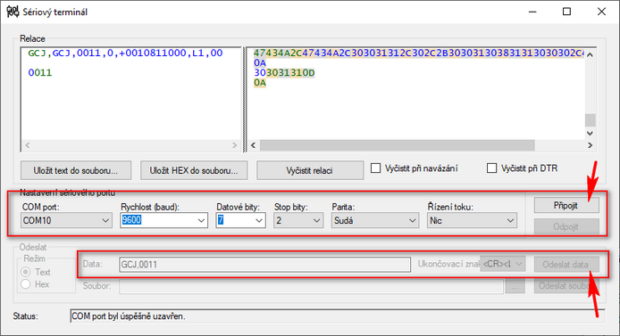

Připojení a komunikace EJ-counterů s prostředím, díl 2
Datová komunikace a programová obsluha EJ-counterů
V současném světe je zcela běžné, že po elektronických zařízeních vyžadujeme vysoký stupeň interakce s okolím a samozřejmě i jistý komfort při jejich ovládání a zpracování dat. V případě EJ-counterů jsou tyto požadavky zajištěny prostřednictvím přídavných komunikačních modulů. Typy komunikačních modulů a základní instrukce pro jejich montáž (zakončovací člen!) jsou uvedeny v prvním z článků této série.
Všechny typy komunikačních jednotek dovolují čtení aktuálních dat, čtení uložených hodnot nastavení a jejich zápis. Jednoduše řečeno, komunikační jednotky umožňují plné ovládání připojené sady counterů z externího systému. Připomeňme, že maximální sestava je osm counterů (= až 16 snímačů) na jeden komunikační modul. Takovýchto bloků pak může být v reálném systému tolik, kolik je potřeba.
Komunikace s počítačem
V této části se budeme věnovat zejména popisu a použití komunikace přes USB, resp. VCP, která je nejjednodušší a dostupná na všech počítačích. Kromě toho, USB připojení je dostupné na všech dodávaných komunikačních modulech.
Virtual Com Port
Po připojení modulů k PC se systémem Windows, které je připojené k internetu, je ve většině případů automatiky nalezen a nainstalován odpovídající driver. Toto je dobré si ověřit ve Správci zařízení (Device manager), kde se připojené zařízení zobrazí takto
Pro další je důležité si zapamatoval přiřazené pojmenování komunikačního portu, v našem případě je to COM10. Komunikace se zařízením se provádí formou výměny ASCII řetězců za použití typického schématu: požadavek- odpověď (request - response)
Sériový terminál
První pokus o výměnu dat může udělat opravdu každý. Potřebuje k tomu nástroj, který je nazýván Sériový terminál a je na internetu k dispozici zdarma. Známý je například Sériový terminál Mitutoyo (nástroj z balíku MeasurLink), který se nemusí ani instalovat, stačí rozbalit kamkoliv (pouze 2 soubory!).
Jako první je zde třeba zvolit komunikační port (zjištěný v předchozím kroku) a nastavit parametry komunikace, které zrovna u jednotky pro EJ countery nejsou úplně typické:
Rychlost 9600 Bd, 7 datových bitů, 2 stop bity, parita sudá (even)
Pak již můžeme COM port otevřít (Připojit). Pokud jsme se úspěšně dostali až sem, můžeme si vyměnit první zprávy. Do řádku pro odesílaná data napíšeme třeba GCJ, 0011, nastavíme správnou sekvenci ukončovacích znaků na {CR}{LF} a odešleme. Měli bychom dostat tento výsledek:
POZNÁMKA: na snímku obrazovky v okně vlevo nahoře je vidět, že terminál poněkud promíchal odeslaná (zelená) a přijatá (modrá) data. Nicméně komunikace jako taková ve smyslu požadavek - odpověď proběhla správně. Každý uživatel asi zvolí "svůj" sériový terminál podle toho, na co je zvyklý a co mu vyhovuje.
Komunikační příkazy
Všechny příkazy pro komunikaci s countery jsou popsány v manuálu v kapitole USB communication format ve formátu data a odpověď. Důležité je připomenout, že návratový řetězec (odpověď), obsahuje i tzv. error kódy, tedy informace o tom že se vše povedlo či o tom, proč se to nepovedlo. Celkem běžně se může stát, že pošleme špatný požadavek. V takovém případě se vrátí odpověď s chybovým kódem 4 = Undefined command.
PŘÍKLAD:
Požadavek: GCJ,0011{CR}{LF}
| 0011: | 0 prefix + 01 adresa EJ-102 counteru (první v pořadí z max. 8) + 1 číslo snímače na EJ-102 modulu (1 nebo 2) |
Odpověď: GCJ,0011,0,+0010900000,L1,00{CR}{LF}
| 0011: | adresa snímače (dle požadavku) |
| 0: | NO ERROR (COMMUNICATION) |
| +0010900000: | +109,000 (hodnota), údaj o hodnotě v setinách µm je používán VŽDY s pevnou délkou (znaménko + 10 číslic) ! |
| L1: | výsledek vyhodnocení tolerance |
| 00: | NO ERROR (DEVICE) |
Reálná úloha
Aktuálním úkolem tedy bude realizovat stejnou měřící úlohu, kterou jsme realizovali při Použití EJ-counterů s připojením přes IO rozhraní. Tentokrát ale budeme chtít, aby veškeré potřebné úkony a čtení a vyhodnocení dat byly realizovány na dálku z počítače pomocí datového rozhraní.
Pro to, abychom mohli úspěšně měřit, jsme potřebovali udělat níže popsané kroky. Ty ovšem nyní uděláme pomocí příslušných příkazů z připojeného počítače:
| Krok | Akce | Jak jsme udělali | Adresa snímače |
Požadavek | Odpověď |
| 1 | Přednastevní hodnoty PRESET do counteru | Tlačítky z panelu | 0011 | SPR,0011,+0010900000 | SPR,0011,0,+0010900000,00 |
| 2 | Nastavení přednastavené hodnoty při vloženém referenčním dílu (měrky) | Bílým IO tlačítkem | 0011 | PST,0011 | PST,0011,0,00 |
| 3 | Opakované měření dílu | Pohled obsluhy (1) | 0011 | GCJ,0011 | GCJ,0011,0,+0011093600,L1,00 |
| 4 | Ověření správné funkce systému měřením reference | Pohled obsluhy (1) | 0011 | GCJ,0011 | GCJ,0011,0,+0010900100,L1,00 |
(1) Při realizaci předchozí úlohy jsme stav měření vyhodnocovali jen pohledem "ve správný okamžik". V zelenám komentáři o trigrování je pak "správný okamžik" uveden jako stisk tlačítka (šlapky) potvrzující, že díl je správně založen a že výsledná hodnota resp. stav na IO vývodech je platný.
V naší aktuální úloze je okamžik trigrování jednoznačně dán okamžikem vyslání příkazu do komunikační jednotky, což se stane na základě stisknutí příslušného tlačítka na klávesnici počítače.
První program
Protože celý systém komponent EJ-counteru dovoluje ovládat všechna nastavení pomocí datového rozhraní, je tak možné vytvářet velmi výkonné a sofistikované mařící systémy tak, že veškerá logika a prezentace výsledků je realizována programově v připojených počítačích a snímače s čítači budou tvořit jen technologické rozhraní a vlastní výkonnou část. Obrazně řečeno - počítač bude mozkem a snímače spolu s čítači budou výkonnými orgány při realizaci měřících úloh.
Ukázky programu a programové příklady ke stažení jsou realizovány v jazyku Python 3. Důvodem k použití tohoto jazyka je zejména skutečnost, že kód je přenositelný na Linux, což může být pro mnoho aplikací velkou výhodou.
DŮLEŽITÉ:
1) změňte přiřazení COM portu na pátém řádku PORT_NUMBER = 'COM10' na port skutečně použitý na vašem počítači
2) uvedený kód je absolutně minimalistický. Program nemá grafické uživatelské rozhraní (GUI), ovládá se tlačítky klávesnice (P, R, Q), není provedeno rozdělení a formátování dat ani ošetření chyb. Je to proto, aby program s co nejmenším objemem kódu ukázal základní principy komunikace a nabídl nezbytný základ pro další práci.
import keyboard # using module keyboard
import time
import serial # using module PySerial
# ((-0-)) serial port specification - change by your own hardware configuration!
PORT_NUMBER = 'COM10'
# serial port setting and initialization
try:
serialOne = serial.Serial(PORT_NUMBER, baudrate=9600, bytesize=serial.SEVENBITS, parity=serial.PARITY_EVEN, stopbits=serial.STOPBITS_TWO, timeout=0.5)
#serialOne.open()
serialOne.flushInput() # flush input buffer, discarding all its contents
serialOne.flushOutput() # flush output buffer, aborting current output and discard all that is in buffer
print('Serial port was opened sucessfully.')
# ((-1-)) save predefined PRESET value (109,000 mm - regarding to the reference piece)
serialOne.write(('SPR,0011,' + preset_value + '\r\n').encode()) # send request to the counter
print(serialOne.readline().decode('utf-8')) # print EJ-counter response
# ================== NEVERENDING LOOP - START ==================
while True:
# ((-2-)) PRESET (on key P)
if keyboard.is_pressed('p'): # if key 'p' is pressed
serialOne.write('PST,0011\r\n'.encode()) # send request to the counter
print(serialOne.readline().decode('utf-8')) # print EJ-counter response
time.sleep(0.5)
# ((-3-)) READ VALUE (on key R)
if keyboard.is_pressed('r'): # if key 'r' is pressed
serialOne.write('GCJ,0011\r\n'.encode()) # send request to the counter
print(serialOne.readline().decode('utf-8')) # print EJ-counter response
time.sleep(0.5)
# ((-4-)) QUIT - PROGRAM END (on key Q)
if keyboard.is_pressed('q'): # if key 'q' is pressed
print('Program was terminated - Q-key was pressed by the user.')
# serial port close
serialOne.close()
break # escape from the loop
# ================== NEVERENDING LOOP - END ==================
except:
print('Serial port ' + PORT_NUMBER + ' is not usable. Maybe you should change the port definition: PORT_NUMBER = ' + PORT_NUMBER)
Realizace
Výsledek celého snažení v praxi je vidět na následujícím videu:
Mihotání LED prvků displeje se projevuje jen na videozáznamu, kde vzniká interferencí mezi obnovovací frekvencí displeje a snímkováním videa.
Popis jednotlivých fázíJednotlivé fáze jsou funkčně stejné jako v předchozím případě realizovaném s využitím IO rozhraní. Tentokrát je ale veškerá interakce s čítačem realizována s využitím komunikace po datovém rozhraní. Získali jsme i reálné míry jednotlivých testovaných kusů a nebyl by tedy problém provést toleranční vyhodnocení v počítači a dát pokyn k navazující akci - např. příkaz pro robota k odebrání dílu.
1) Připojení napájení
1b) Spuštění programu
Spuštění programu pro komunikaci se snímačem. Okamžitě po spuštění je provedeno uložení aktuální hodnoty preset do čítače (109,000 mm) stisknutím tlačítka P (Preset). Snímač vrátil odpověď SPR,0011,0,+0010900000,00.
2) Reference a PRESET
Stisknutím klávesy P po vložení referenčního normálu (měrky) je odeslán příkaz k nastavení reference. Na displeji je vidět převzatá hodnota. Snímač vrátil odpověď o bezchybném provedení PST,0011,0,00.
3) Měření
Ve fázi měření je prováděno rutinní vkládání výrobků do měřícího systému. Po řádném založení je provedeno odečtení hodnoty stisknutím tlačítka R (Read). Snímač vrací odpověď s aktuální hodnotou a s výsledkem tolerančního vyhodnocení, např. GCJ,0011,0,+0011093600,L1,00 pro první díl.
+0011093600 = 11,0936 mm
L1 = NOK OK- (L3 = OK, L5 = NOT OK+)
4) Ověření
Po vložením referenčního dílu je proveden odečet hodnoty stisknutím tlačítka R. Snímač vrátil odpověď GCJ,0011,0,+0010900100,L1,00, která obsahuje hodnotu rozměru 109,001 mm. Rozdíl 1 µm je zcela zanedbatelný, ověření je možno pokládat za OK. Pokud by ověření nebylo v pořádku program musí vyvolat příslušnou akci (zastavení dalšího měření + výstraha).
5) Ukončení programu
Na závěr bylo provedeno formální ukončení programu tlačítkem Q (Quit). Do čítače přitom nebyla odeslána žádná hodnota. Samotné ukončení komunikačního programu nemá na čítač žádný vliv.
Spolupráce s IO a možnost jejich dalšího využití
Za zvláštní zmínku stojí jedna věc. Z předchozí úlohy zůstaly v EJ-counteru zapnuté 3-stupňové toleranční vyhodnocení a uložené toleranční meze. Díky tomu counter automaticky provedl toleranční vyhodnocení. Výsledky odeslal v odpovědi na každý dotaz na měřenou hodnotu. Můžeme si všimnout, že v návratových řetězcích se vyskytuje L1 pro NOT OK-, L3 pro OK a L5 pro NOT OK+. Zároveň je ale tato indikace patrná na LED ukazateli EJ-counteru a odpovídající stavy se objevují i na logických výstupech na konektoru modulu. To nám dává možnost řešit navázání do technologie jak pomocí připojeného PC, tak pomocí "drátů", které při patřičném oddělení a zesílení vedou do nějakých akčních členů. Tato variabilita může být leckdy celkem výhodná, protože z PC obvykle žádné zvláštní "dráty" nevedou a akční členy tedy nemusí být snadné k PC připojit.
Toleranční vyhodnocení
Při použití vyhodnocení tolerancí v EJ counteru lze samozřejmě toleranční meze i samotné tolerování nastavit pomocí komunikačního modulu obdobně jako jsme nastavili hodnotu Preset<>/i. Zároveň s tím je ale možné tyto parametry nastavovat i přímo z panelu jednotky. To nabízí širokou škálu scénářů použití - lze například napsat program, který přebírá a zpracovává výsledky vyhodnocení Lx, přičemž hodnoty mezí lze v případě potřeby měnit tlačítky na jednotce EJ counteru, nebo pomocí nastavovacího programu LG Quick Setup Tool. Tak lze např. zjednodušit samotný výkonný program a snížit práci spojenou s programováním speciální aplikace.
Výpis výstupů programu v CMD okně
Serial port was opened successfully.
SPR,0011,0,+0010900000,00
COMMANDS: - press P key for PRESET
- press R key for READ the counter value
- press Q key for QUIT
PST,0011,0,00
GCJ,0011,0,+0011093600,L1,00
GCJ,0011,0,+0011098300,L3,00
GCJ,0011,0,+0011102950,L5,00
GCJ,0011,0,+0011100050,L5,00
GCJ,0011,0,+0010900100,L1,00
Program was terminated - Q-key was pressed by the user.
Nechcete programovat, a přesto byte si to rádi zkusili? V takovém případě si můžete stáhnout mírně upravený zkompilovaný kód a ten přímo bez instalace spustit na svém počítači.
- Stáhněte komprimovaný balíček (pokud vám to bezpečnostní politika dovolí - obsahuje EXE) a rozbalte ho do nějakého adresáře.
- Připojte jednotku EJ-counteru pomocí USB, zkontrolujte COM port ve Správci zařízení.
- Upravte záznam o použitém COM portu v souboru config.ini, případně upravte hodnotu PRESET dle svých podmínek.
- Spusťte program main.exe. Někdy je lepší program spustit z Příkazového řádku. Nezapomeňte se zde přepnout do adresáře, kde máte rozbalený program.
- TIP: pokud program spouštíte z grafického prostředí a CMD okno vám jen problikne a zmizí, máte špatně nastaven COM port v config.ini a nebo komunikační jednotka counteru není připojena.
Odkazy a další informace
Aplikace s lineárními snímači a EG (EH) countery